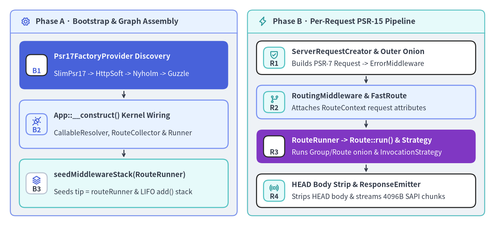
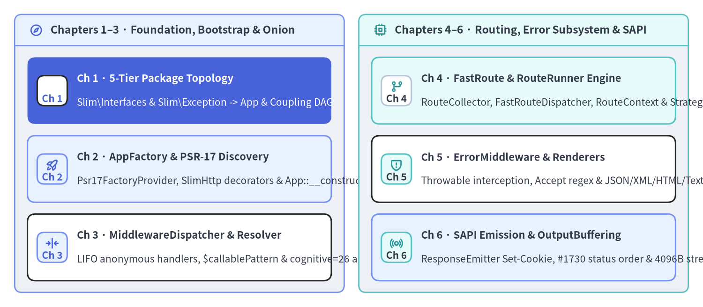

Slim Framework v4.15.3 — Internal Architecture Guide
Slim Framework (v4.15.3 · 72 PHP source files · 3,149 LOC · 17 contract interfaces · 100% declare(strict_types=1)) is a standards-pure PHP HTTP micro-kernel built around a single architectural invariant: compose PHP-FIG interfaces (PSR-7, PSR-11, PSR-15, PSR-17, PSR-3) and Nikic FastRoute into a stateless, concentric RequestHandlerInterface pipeline without coupling to any single HTTP message implementation or DI container. This unofficial source-level guide dissects how Slim's internal bootstrap factories, LIFO middleware dispatcher, regex routing engine, content-negotiated error subsystem, and SAPI response emitter work under the hood, complementing the application-focused Slim 4 User Guide and Slim 4 API Reference.

Source Code
from drawlib.canvas import save, setup
from drawlib.icons import phosphor
from drawlib.smartarts import CardList, Panel
from drawlib.styles import Colors, Styles
setup(width=192, height=88, dpi=150)
# Left Panel: Phase A — Bootstrap & Route Registration
p_left = Panel(
"Phase A · Bootstrap & Graph Assembly",
"",
style=Styles.Neutral.patch(shape_r=2.0),
header_style=Styles.PrimaryNeutral.patch(shape_line_width=1.2),
text_style=Styles.DarkBold.patch(text_size=11.0),
icon=phosphor.gear,
icon_style=Styles.PrimaryBold,
header_variant="filled",
header_height=8.8,
)
p_left.draw((4.0, 4.0), width=88.0, height=80.0)
lx, lw, lh = p_left.get_content_box((4.0, 4.0), width=88.0, height=80.0, padding=(3.5, 3.2))
cl_left = CardList(
style=Styles.White,
text_style=Styles.DarkBold.patch(text_size=10.5),
description_style=Styles.Dark.patch(text_size=10.0),
badge_shape="rounded_rect",
badge_style=Styles.PrimaryNeutral,
badge_text_style=Styles.PrimaryBold.patch(text_size=10.0),
icon_style=Styles.PrimaryBold,
direction="vertical",
spacing=3.0,
show_arrows=True,
arrow_style=Styles.DarkBold.patch(line_arrow_head_scale=10, line_width=1.4),
)
cl_left.add(
"Psr17FactoryProvider Discovery",
"SlimPsr17 -> HttpSoft -> Nyholm -> Guzzle",
badge_text="B1",
icon=phosphor.magnifying_glass,
style=Styles.PrimaryFlat,
text_style=Styles.WhiteBold.patch(text_size=10.5),
description_style=Styles.White.patch(text_size=10.0),
badge_style=Styles.White,
badge_text_style=Styles.PrimaryBold.patch(text_size=10.0),
icon_style=Styles.WhiteBold,
)
cl_left.add(
"App::__construct() Kernel Wiring",
"CallableResolver, RouteCollector & Runner",
badge_text="B2",
icon=phosphor.plugs_connected,
style=Styles.PrimaryNeutral,
)
cl_left.add(
"seedMiddlewareStack(RouteRunner)",
"Seeds tip = routeRunner & LIFO add() stack",
badge_text="B3",
icon=phosphor.stack,
style=Styles.SecondaryNeutral,
badge_style=Styles.White.patch(shape_line_color=Colors.Gray4),
badge_text_style=Styles.DarkBold.patch(text_size=10.0),
)
cl_left.draw(xy=lx, width=lw, height=lh)
# Right Panel: Phase B — Per-Request PSR-15 Hot Path
p_right = Panel(
"Phase B · Per-Request PSR-15 Pipeline",
"",
style=Styles.Neutral.patch(shape_r=2.0),
header_style=Styles.SecondaryNeutral.patch(shape_line_width=1.2),
text_style=Styles.DarkBold.patch(text_size=11.0),
icon=phosphor.lightning,
icon_style=Styles.SecondaryBold,
header_variant="filled",
header_height=8.8,
)
p_right.draw((96.0, 4.0), width=92.0, height=80.0)
rx, rw, rh = p_right.get_content_box((96.0, 4.0), width=92.0, height=80.0, padding=(3.5, 3.2))
cl_right = CardList(
style=Styles.White,
text_style=Styles.DarkBold.patch(text_size=10.5),
description_style=Styles.Dark.patch(text_size=10.0),
badge_shape="rounded_rect",
badge_style=Styles.SecondaryNeutral,
badge_text_style=Styles.DarkBold.patch(text_size=10.0),
icon_style=Styles.SecondaryBold,
direction="vertical",
spacing=2.6,
show_arrows=True,
arrow_style=Styles.DarkBold.patch(line_arrow_head_scale=10, line_width=1.4),
)
cl_right.add(
"ServerRequestCreator & Outer Onion",
"Builds PSR-7 Request -> ErrorMiddleware",
badge_text="R1",
icon=phosphor.shield_check,
)
cl_right.add(
"RoutingMiddleware & FastRoute",
"Attaches RouteContext request attributes",
badge_text="R2",
icon=phosphor.git_branch,
style=Styles.PrimaryNeutral,
)
cl_right.add(
"RouteRunner -> Route::run() & Strategy",
"Runs Group/Route onion & InvocationStrategy",
badge_text="R3",
icon=phosphor.play_circle,
style=Styles.AccentFlat,
text_style=Styles.WhiteBold.patch(text_size=10.5),
description_style=Styles.White.patch(text_size=10.0),
badge_style=Styles.White,
badge_text_style=Styles.DarkBold.patch(text_size=10.0),
icon_style=Styles.WhiteBold,
)
cl_right.add(
"HEAD Body Strip & ResponseEmitter",
"Strips HEAD body & streams 4096B SAPI chunks",
badge_text="R4",
icon=phosphor.broadcast,
)
cl_right.draw(xy=rx, width=rw, height=rh)
save()
Core Architectural Invariants of Slim 4
Unlike monolithic MVC frameworks that bundle proprietary HTTP request objects, global service locators, and coupled template engines, Slim v4.15.3 reduces the framework core to four composable mechanisms:
- Zero-Config PSR-17 Provider Auto-Discovery (
Slim\Factory\*):AppFactory::determineResponseFactory()(Slim/Factory/AppFactory.php:127-157) andServerRequestCreatorFactory::determineServerRequestCreator()(Slim/Factory/ServerRequestCreatorFactory.php:37-59) iterate throughPsr17FactoryProvider::$factories(SlimPsr17Factory,HttpSoftPsr17Factory,NyholmPsr17Factory,LaminasDiactorosPsr17Factory,GuzzlePsr17Factory) usingclass_exists(), automatically wrapping discovered factories inSlim\Httpdecorators whenslim/httpis installed. - Two-Tier Concentric PSR-15 Middleware Stacks (
Slim\MiddlewareDispatcher&Slim\Routing\Route): Slim uses the exact sameMiddlewareDispatcherclass at two distinct levels: the application-level stack seeded withRouteRunner(Slim/App.php:71-79), and each route's local stack seeded with theRouteinstance itself (Slim/Routing/Route.php:140). Callingadd()wraps$this->tipin an anonymousRequestHandlerInterfaceclass (Slim/MiddlewareDispatcher.php:116-131), forming a Last-In-First-Out (LIFO) concentric onion. - Decoupled FastRoute Matching vs Route Execution (
RoutingMiddleware->RouteRunner): Rather than executing the route handler immediately upon regex matching,RoutingMiddleware::performRouting()(Slim/Middleware/RoutingMiddleware.php:57-86) computesRoutingResultsviaFastRouteDispatcherand attaches immutableRouteContextattributes (__route__,__routeParser__,__routingResults__) ontoServerRequestInterface. Downstream middlewares can inspect the matchedRoutebeforeRouteRunner::handle()(Slim/Routing/RouteRunner.php:57-75) triggers group and route middlewares. - Content-Negotiated Exception Boundary (
ErrorMiddleware->ErrorHandler):ErrorMiddleware::process()(Slim/Middleware/ErrorMiddleware.php:74-81) wraps the inner pipeline in atry / catch (Throwable $e)block, resolving exact-class oris_subclass_of()handlers before delegating toErrorHandler::__invoke()(Slim/Handlers/ErrorHandler.php:116-139), which negotiatesAcceptheaders across JSON, XML, HTML, and PlainTextErrorRendererInterfaceimplementations.
| Metric / Dimension | Slim v4.15.3 Value |
Source Location / Architectural Verification |
|---|---|---|
| Source Files & Code Volume | 72 files · 3,149 LOC |
Slim/ (72 classes/interfaces, 311 methods, avg 43.7 LOC/file) |
| Strict Typing Discipline | 100% (72 / 72 files) |
Every file in Slim/ and tests/ declares declare(strict_types=1); |
Contract Surface (Slim\Interfaces\*) |
17 interfaces |
Full decoupling of routing, dispatching, callable resolution, PSR-17 & error rendering |
Typed HTTP Exceptions (Slim\Exception\*) |
11 classes |
HttpException -> HttpSpecializedException -> 400/401/403/404/405/410/429/500/501 |
Runtime Dependencies (composer.json) |
7 packages |
nikic/fast-route: ^1.3 + 6 official psr/* contract packages (0 bloat) |
| Measured Line Coverage (PHPUnit + PCOV) | 99.4% (1,049 / 1,055 stmts) |
441 offline PHPUnit tests (1,323 assertions); 13 / 15 core classes at 100.0% |
Chapter Roadmap & Source Module Map

Source Code
from drawlib.canvas import save, setup
from drawlib.icons import phosphor
from drawlib.smartarts import CardList, Panel
from drawlib.styles import Colors, Styles
setup(width=192, height=84, dpi=150)
p_left = Panel(
"Chapters 1–3 · Foundation, Bootstrap & Onion",
"",
style=Styles.Neutral.patch(shape_r=2.0),
header_style=Styles.PrimaryNeutral.patch(shape_line_width=1.2),
text_style=Styles.DarkBold.patch(text_size=11.0),
icon=phosphor.compass,
icon_style=Styles.PrimaryBold,
header_variant="filled",
header_height=8.5,
)
p_left.draw((4.0, 4.0), width=90.0, height=76.0)
lx, lw, lh = p_left.get_content_box((4.0, 4.0), width=90.0, height=76.0, padding=(3.5, 3.2))
cl_left = CardList(
style=Styles.White,
text_style=Styles.DarkBold.patch(text_size=10.5),
description_style=Styles.Dark.patch(text_size=10.0),
badge_shape="rounded_rect",
badge_style=Styles.PrimaryNeutral,
badge_text_style=Styles.PrimaryBold.patch(text_size=10.0),
icon_style=Styles.PrimaryBold,
direction="vertical",
spacing=3.2,
)
cl_left.add(
"Ch 1 · 5-Tier Package Topology",
"Slim\\Interfaces & Slim\\Exception -> App & Coupling DAG",
badge_text="Ch 1",
icon=phosphor.stack,
style=Styles.PrimaryFlat,
text_style=Styles.WhiteBold.patch(text_size=10.5),
description_style=Styles.White.patch(text_size=10.0),
badge_style=Styles.White,
badge_text_style=Styles.PrimaryBold.patch(text_size=10.0),
icon_style=Styles.WhiteBold,
)
cl_left.add(
"Ch 2 · AppFactory & PSR-17 Discovery",
"Psr17FactoryProvider, SlimHttp decorators & App::__construct()",
badge_text="Ch 2",
icon=phosphor.rocket_launch,
style=Styles.PrimaryNeutral,
)
cl_left.add(
"Ch 3 · MiddlewareDispatcher & Resolver",
"LIFO anonymous handlers, $callablePattern & cognitive=26 analysis",
badge_text="Ch 3",
icon=phosphor.arrows_in_line_horizontal,
)
cl_left.draw(xy=lx, width=lw, height=lh)
p_right = Panel(
"Chapters 4–6 · Routing, Error Subsystem & SAPI",
"",
style=Styles.Neutral.patch(shape_r=2.0),
header_style=Styles.SecondaryNeutral.patch(shape_line_width=1.2),
text_style=Styles.DarkBold.patch(text_size=11.0),
icon=phosphor.cpu,
icon_style=Styles.SecondaryBold,
header_variant="filled",
header_height=8.5,
)
p_right.draw((98.0, 4.0), width=90.0, height=76.0)
rx, rw, rh = p_right.get_content_box((98.0, 4.0), width=90.0, height=76.0, padding=(3.5, 3.2))
cl_right = CardList(
style=Styles.White,
text_style=Styles.DarkBold.patch(text_size=10.5),
description_style=Styles.Dark.patch(text_size=10.0),
badge_shape="rounded_rect",
badge_style=Styles.SecondaryNeutral,
badge_text_style=Styles.DarkBold.patch(text_size=10.0),
icon_style=Styles.SecondaryBold,
direction="vertical",
spacing=3.2,
)
cl_right.add(
"Ch 4 · FastRoute & RouteRunner Engine",
"RouteCollector, FastRouteDispatcher, RouteContext & Strategies",
badge_text="Ch 4",
icon=phosphor.git_branch,
style=Styles.SecondaryNeutral,
badge_style=Styles.White.patch(shape_line_color=Colors.Gray4),
badge_text_style=Styles.DarkBold.patch(text_size=10.0),
)
cl_right.add(
"Ch 5 · ErrorMiddleware & Renderers",
"Throwable interception, Accept regex & JSON/XML/HTML/Text renderers",
badge_text="Ch 5",
icon=phosphor.shield_warning,
)
cl_right.add(
"Ch 6 · SAPI Emission & OutputBuffering",
"ResponseEmitter Set-Cookie, #1730 status order & 4096B streaming",
badge_text="Ch 6",
icon=phosphor.broadcast,
style=Styles.PrimaryNeutral,
)
cl_right.draw(xy=rx, width=rw, height=rh)
save()
| Chapter | Internal Architecture Page | Upstream PHP Source Files Dissected (./Slim/) |
|---|---|---|
| 1. Package Topology & Layers | 5-Tier Module Hierarchy & Coupling | Slim\Interfaces\* (17 files), Slim\Exception\* (11 files), Slim\Routing\RoutingResults.php, Slim\Interfaces\DispatcherInterface.php |
| 2. Bootstrap & PSR-17 Auto-Discovery | AppFactory & Psr17FactoryProvider Internals | Slim\App.php, Slim\Factory\AppFactory.php, Slim\Factory\ServerRequestCreatorFactory.php, Slim\Factory\Psr17\* (10 classes) |
| 3. Middleware Onion & CallableResolver | MiddlewareDispatcher & CallableResolver Internals | Slim\MiddlewareDispatcher.php, Slim\CallableResolver.php, Slim\Interfaces\CallableResolverInterface.php, Slim\Interfaces\AdvancedCallableResolverInterface.php |
| 4. FastRoute & RouteRunner Engine | FastRouteDispatcher, RouteRunner & Strategies | Slim\Routing\{RouteCollectorProxy,RouteCollector,RouteGroup,Route,RouteContext,RouteParser,RouteResolver,RouteRunner,Dispatcher,FastRouteDispatcher,RoutingResults}.php, Slim\Middleware\RoutingMiddleware.php, Slim\Handlers\Strategies\* |
| 5. Error Subsystem & Renderers | ErrorMiddleware, ErrorHandler & Renderers | Slim\Middleware\ErrorMiddleware.php, Slim\Handlers\ErrorHandler.php, Slim\Error\AbstractErrorRenderer.php, Slim\Error\Renderers\{Html,Json,PlainText,Xml}ErrorRenderer.php, Slim\Logger.php |
| 6. SAPI Response Emission | ResponseEmitter & OutputBuffering Internals | Slim\ResponseEmitter.php, Slim\Middleware\{OutputBufferingMiddleware,ContentLengthMiddleware,BodyParsingMiddleware,MethodOverrideMiddleware}.php |
Companion Portals & Upstream Attribution
- Companion Engineering Guides: For practical application architecture, PHP-DI wiring, authentication middlewares, and PHPUnit testing recipes, visit the Slim 4 User Guide and the Slim 4 API Reference. For deterministic PHP AST, PCOV line coverage (
99.4%), and supply-chain security verification (94 / 100, GradeS), consult the PNI501 Diagnostic Report. - Upstream Attribution: Slim Framework was created by Josh Lockhart and is maintained by the Slim Framework team under the MIT License (
LICENSE-SLIM). Always refer to https://www.slimframework.com/ for official documentation and release notes. Continue to Chapter 1: 5-Tier Module Hierarchy & Coupling to trace Slim's namespace dependency graph from leaf contracts toSlim\App.